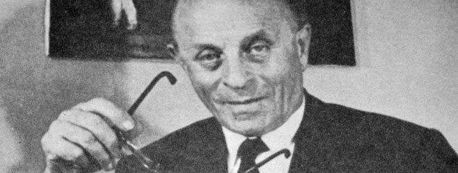

|
 | |
||
A golyóstoll szerkezete |
||||
A golyó nagyítva |
||||
A Golyóstoll – Bíró László újságíró, feltaláló1899. szeptember 29-én megszületett Bíró László József, a golyóstoll feltalálója. Bíró László József nyughatatlan ifjúkorában szinte az összes létező szakmában kipróbálta magát. A későbbi feltaláló az orvosi egyetemen kezdett, majd foglalkozott grafológiától kezdve a festészeten át az autóversenyzésig nagyjából mindennel. 1932-től több folyóiratnak és lapnak volt munkatársa, így került a nyomdák közelébe. Ott aztán addig-addig nézegette a nyomdagépeket, míg kitalálta, hogyan lehet összeállítani a folyamatosan író tollat egy tintával töltött hengerből és egy golyóból. 1938-ban két szabadalmat is bejegyeztetett Magyarországon a folyamatosan fejlesztett toll-találmányaira, a gyártáshoz folytatott kísérleteket azonban már külföldön végezte. Párizson keresztül Argentínába vezetett az útja, és használható, ma is ismert golyóstollára is itt kapott szabadalmat 1943-ban. A sok más találmánnyal is rendelkező Bíró Buenos Airesben hunyt el 1985-ben. Elismertségét bizonyítja többek között, hogy választott hazájában az ő születésnapja, szeptember 29. az Argentin Feltalálók Napja. |
||||